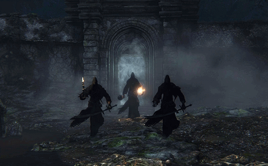

Shadows of Yharnam

Description
From the Caryll rune that they drop, it can be assumed that the shades are servants of the Phtumerian Queen of Yharnam.
They guard the entrance to Byrgenwerth, far inside the Forbidden Woods.
Tips
- The easiest order in which to beat them is the following: Sword, Sword and Candle, Mace and Flame.
- The swordsman can easily be parried, so take opportunity of the invincibility window during a critical attack.
- The candle holder will attempt to dodge after an attack has hit so repeat the cycle: Attack, get close, attack.